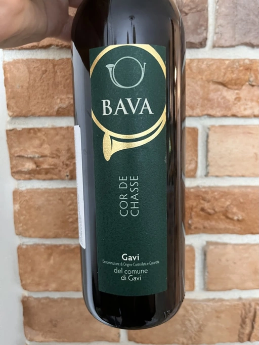

- Type
- White Still, Dry
- Producer
- Bava
- Vintage
- 2020
- Location
- Italy, Gavi DOCG
- Grapes
- Cortese
- Alcohol
- 13
- Sugar
- NA
- Price
- 715 UAH
- Cellar
- N/A
Ratings
2022-08-24 - 7.40
Obvious ageing on lees thanks to notes of cheese and yeast that smells like cheese (bloody hell, why do I know how this edible yeast smells?). Add flowers, stone fruits, yellow apples and lack of freshness. Luckily, in this century we have ACs. But it has good volume and a long aftertaste. My only complaint is regarding balance. Other than this, it’s a simple, pleasant wine that matches well with Asian food.